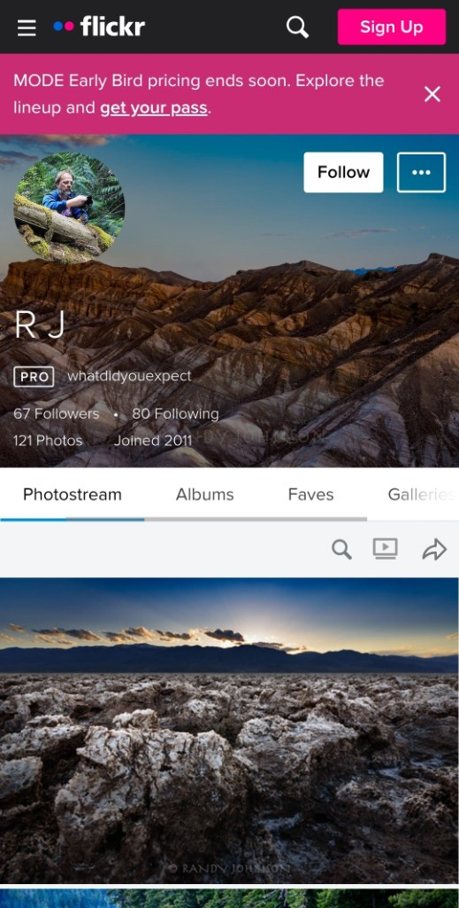
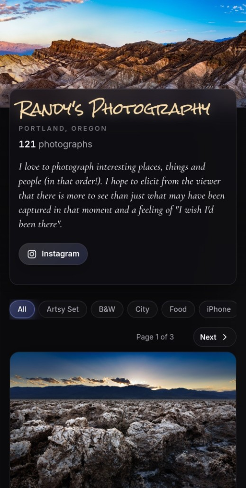
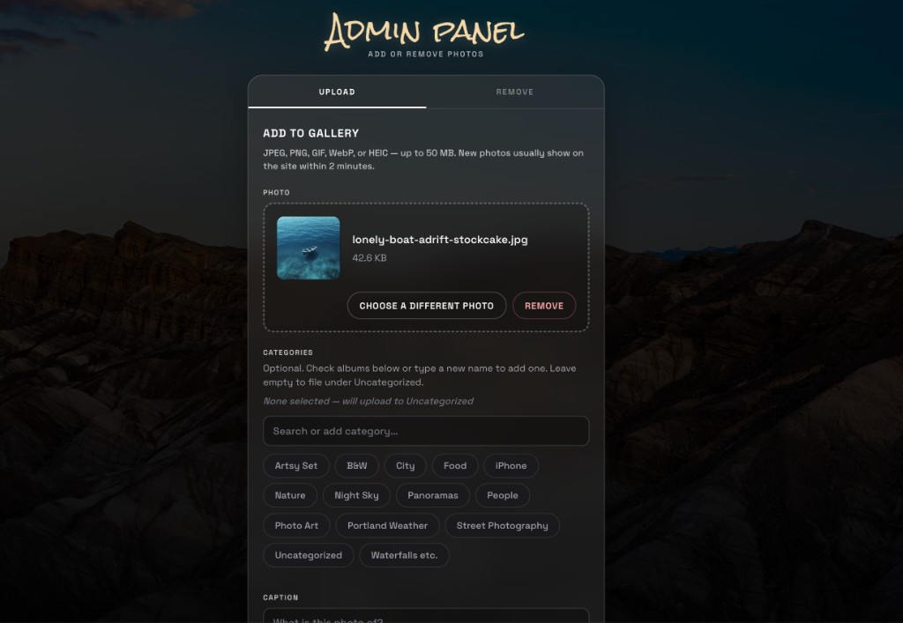
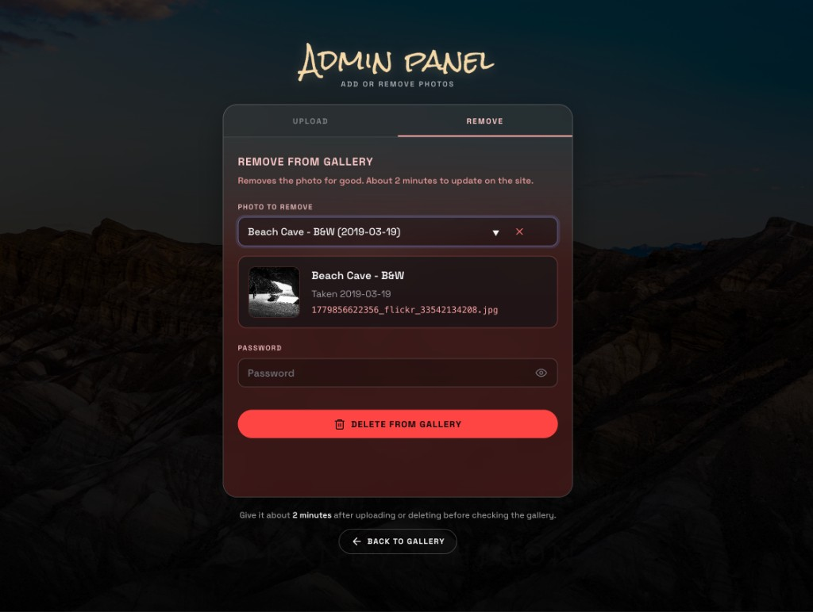

Live site · album filters · masonry grid · shareable lightbox
My dad's work lived on Flickr since 2011 — 121 photos, albums, captions, and a Pro subscription just to keep the archive healthy. I migrated the full library into a custom gallery he owns, on hosting that costs nothing beyond a domain.
Flickr profile and photostream on the left, his owned gallery on the right. Same 121 photos, his URL.


Live site · album filters · masonry grid · shareable lightbox
Flickr was the right place to share for years — but it's still their product, their ads, their Pro upsell, and another subscription if you want the archive treated seriously. This build is about owning the gallery: same photos, a presentation that matches the work, and hosting that doesn't bill monthly for the privilege of staying online.
Before
Flickr Pro, generic photostream, platform lock-in, "Get Pro" nags
After
Custom gallery · album filters · lightbox · shareable photo URLs · free static hosting
Client impact
He can let Flickr Pro lapse. The gallery and links stay on his side.
Rough subscription math from public list prices (2025–2026). He was on Flickr Pro (highlighted row).
| Platform | Typical plan (approx.) | ~3 years of subscriptions |
|---|---|---|
| Flickr Pro · this client | ~$7–$12/mo | ~$250–$430+ |
| Weebly | ~$10–$26/mo | ~$360–$940+ |
| Wix | ~$17–$36/mo | ~$610–$1,300+ |
| Squarespace | ~$16–$27/mo | ~$575–$975+ |
Figures are ballpark only — annual billing and promos change the total. The point: recurring platform fees add up while you never own the experience.
One project fee, then he runs the gallery. After launch: a domain (~$20/year) and free static hosting, no Flickr Pro.
He sends people to rjphotos.netlify.app (or his domain when he points one), not flickr.com/photos/….
He uploads and removes shots himself. No Flickr login, no monthly CMS, no call to me for every change.
Click a photo on his site and you get full screen, caption, and date. Share hands off one image, not the whole grid. Below: arrows, swipe on mobile, or keyboard. Share copies the link visitors get.
Photo 1 of 4
He adds or removes photos without calling me, opening Flickr, or paying for a CMS. Upload: drop the file, pick albums, caption it. Remove: select it, confirm, gone from the live site in a couple minutes.

